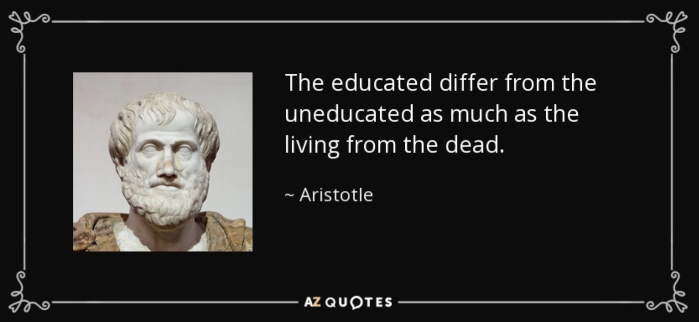

chapter7.3--handout
Background Information
Edward Bok（爱德华·波克）
💧Edward Bok是一位荷兰裔美国编辑，也是一位普利策奖（Pulitzer Prize）得主。基于他早年初代移民的经历（由于贫穷去面包房打小工、捡路上掉落的煤块帮助家庭，以度过艰难的早期移民时光），Bok出版了他的自传（autobiography）：
The Americanization of Edward Bok: The Autobiography of a Dutch Boy Fifty Years Later.
这部自传在帮他获得普利策奖(1921 Pulitzer Prize for Biography or Autobiography)的同时，也赢取了Gold Medal of the Academy of Political and Social Science.
The Pulitzer Prizes
💧这里需要给大家隆重介绍新闻届的诺贝尔奖：普利策奖（The Pulitzer Prizes）。 1917年根据美国报业巨头约瑟夫·普利策（Joseph Pulitzer）的遗愿设立，二十世纪七八十年代已经发展成为美国新闻界的一项最高荣誉奖。
一个世纪以来，普利策奖一直是新闻业的标杆，与美国社会一同经历了战争硝烟、政治丑闻和错综复杂的社会问题。
从最初的新闻奖，普利策奖现在还设立了包括文学、艺术在内的综合奖项，一共包括十四项新闻类奖项和七项创作类奖项，新闻类奖项的获奖者不限国籍，但必须在美国媒体中发表过作品。而创作类的奖项则必须是美国公民。唯一的例外是历史写作奖，如果作者身为外籍人士，但写作的作品涉及美国史，仍有机会获得这一奖项。
💧分享几幅Pulitzer Prizes中，专题新闻摄影奖作品：
一个即将饿死的苏丹女童跪倒在地，而鹰在女孩后方不远处虎视眈眈，等候猎食女孩的画面。这张照片获得普利策奖之后不久，Kevin Carter因舆论而自杀。
911发生时，第二架飞机撞上纽约世贸中心大楼时造成巨大破坏，烈火和浓烟从大楼里滚滚而出，随后大楼垮塌，产生巨大烟浪。
上图是Rocco Morabito1967年经典作品「The Kiss of Life」(生命之吻)，展示的是一位名叫JD Thompson的工人，正为同事Randall G. Champion以口对口人工呼吸方式急救，因为他误触了低压电缆而失去意识，这幅照片表面有点浪漫(?)，实际是一个令人感动的瞬间，亦是心肺复苏法的经典影像，也在1968年获得普利策新闻摄影奖。
当时伤者Champion 触电后休克，幸好有安全绳防止下堕，而拯救者Thompson迅速捉住他，并且进行人工呼吸，即使现场无法施行心外压，却透过持续不断把气吹入伤者肺中，直至他恢复轻微脉象，就与他一同松开安全带回到地面，与其他工人继续CPR，等到医护人员赶到作进一步治疗，最终伤者完全康复。
Champion 不但没有死，还活到了2002 年(64岁)，至于救人的Thompson 据指至今还活着。
Vocabulary
tow
💧an act of pulling a vehicle behind another vehicle, using a rope or chain
〔对车船等的〕牵引，拖，拉
💧Can you give us a tow to the garage?
你能帮我们把车拖到修车厂吗？
imbue
💧If someone or something is imbued with an idea, feeling, or quality, they become filled with it.
灌输
💧[SYN] infuse
💧The film is imbued with the star's rebellious spirit.
这部电影充满了那位明星的反叛精神。
fire
💧If you fire someone with enthusiasm, you make them feel very enthusiastic. If you fire someone's imagination, you make them feel interested and excited.
激发
💧[SYN] inspire
💧It was Allen who fired this rivalry with real passion.
是艾伦满怀激情地激发了这次对抗。
genial
💧Someone who is genial is kind and friendly.
友善的
💧[SYN] friendly
💧Bob was always genial and welcoming.
鲍勃总是和善友好。
bust
💧If you bust something, you break it or damage it so badly that it cannot be used.
打碎
💧They will have to bust the door to get him out.
他们将不得不砸碎门把他弄出来。
Crush Your Problems
- Not only did he correspond with these distinguished people, but as soon as he got a vacation, he visited many of them as a welcome guest in their homes.
💧这句话涉及倒装的一种情形。倒装是一种语法手段，用于表示一定的句子结构或强调某一句子成分。
倒装句有两种：完全倒装和部分倒装，这句话涉及部分倒装，即只把谓语的一部分（如助动词、情态动词等）放到主语前，或把句子的强调成分提前。以否定词开头的句子要求部分倒装，本句中，not是否定词，所以将助动词“did”提前，形成倒装句。 - “those people who think only of themselves,” Dr. Nicholas Murray Butler, longtime president of Columbia University, said, “are hopelessly uneducated. They are not educated,” said Dr. Butler, “no matter how instructed they may be.”
自我中心的人是uneducated，这里Dr. Butler用到了一组对比来点明问题：
不论有多么的instructed，他们依然是uneducated。
这两个词的区别是什么呢？
💧educated: 除了说广义的受教育之外，更多强调一个人的教养；an educated manner就表示有教养的举止。另外再补充一个其他意思，an educated guess这种情况呢，就是说guess based on relevant experience
💧instructed：表示教授、指导，就是说一个人被指导过，impart skills or knowledge to，有某一个领域的知识，但是这个和教养，就无关啦～
 - So if you aspire to be a good conversationalist, be an attentive listener. To be interesting, be interested.
这个句子中卡叔用到了另一组对比，类似uneducated对比instructed，这里的对比呢，在于：
💧渴望to be a good conversationalist，就需要先去做attentive listener；
💧to be interesting（to do表示目的，想要去变成有趣的人），be interested（首先你要去对别人感兴趣）。
下次当你想强调一个结果的时候，也可以套用这种说法啦：
💧To avoid being bored, avoid being boring.
可以说是...想不被人烦就先别烦人？
哈哈哈，你懂的~
Content Analysis
今天的内容中，卡叔继续讲述了美国最年轻有为的杂志编辑爱德华•波克（Edward Bok）的成功秘诀。爱德华家境贫寒，小小年纪就要打工养家。虽然早早辍学，但他从未放弃学习。
(he didn’t for one moment give up the idea of an education. Instead, he started to educate himself.)
作者认为，他之所以成功，是因为他和全美知名人士建立了联系，给了他宝贵的自信，开拓了他的眼界。而这一切，都是通过本章中所阐述的准则得以实现的。
通过者两个例子，作者指出，善于倾听比其他品质更加罕见。(Listen seems rarer than almost any other good trait.) 不仅名人需要，普通人也需要倾听。
林肯曾当面询问发表宣言是否合适，但在数小时的交谈里，林肯一直在滔滔不绝，并未询问对方的意见。
(Without even asking for his opinion. Lincoln had done all the talking himself.)
这是因为每个人都需要一个良好的听众，在困厄时卸下心理负担。
(Sympathetic listener to whom he could unburden himself.)
之后，作者总结道，如果要能言善辩就要学会聆听，
(So if you aspire to be a good conversationalist, be an attentive listener,)
鼓励对方多谈论自己的经历。要记住，谈话对象并不关心你的问题，而更关心自己本身。
(Remember that the people you are talking to are a hundred times more interested in themselves and their wants and problems than they are in you and your problems.)
最后，作者点题本章原则：做一个善于静听的人。鼓励别人多谈谈他们自己。
(Be a good listener. Encourage others to talk about themselves.)
Today's Bonus
今天的内容中，卡叔提到了Columbia University校长Dr. Nicholas Murray Butler关于倾听的观点，be interested。相信大家都有所感触，那么今天的彩蛋...请大家分享一份来自水滴教学团队的私心...一起来了解一下和我们有深深浅浅缘分的哥伦比亚大学吧～
Columbia University不仅是Ivy League成员（八大常春藤盟校之一），听起来很正经的样子，但有一些fun facts，比如，哥大学生的平均睡眠时间全美最少，哥大学生的学业压力最大，我会说吗？
💧哥大蓝
Columbia Blue，哥大蓝，可以说是哥大最具代表性的颜色了，大部分学校的毕业服都是黑色，然而哥大就用了自己“校色”——哥大蓝。所以每年一到毕业季的时候，满学校都飘着各种笑开花的穿着毕业服拍照的学生，到了毕业典礼那一天，就更变成了蓝色的海洋。
毕业典礼的时候学校还贴心给你准备气球，满足你的少男少女心，也是挺可爱的。
偶遇一个毕业生给自己的娃定做了一身哥大毕业服，引来了好多人侧目，当时就觉得，这个毕业生以及他的孩子，都是人生赢家了。
💧Pulitzer Prizes
前面提到的普利策奖，也来自于哥大：普利策1868年开始从事新闻工作，他的一生对美国报纸的发展有着较大的影响，被人们誉为创办现代美国报纸的先驱者和示范者。
1903年，普利策写下遗嘱，决定出资兴办哥伦比亚新闻学院和建立普利策奖金，由哥伦比亚大学董事会掌管他遗赠的基金。1911年10月29日普利策逝世。根据他的遗嘱，1912年开办了哥伦比亚新闻学院，1917年起设立了普利策奖。至今，一年一度的普利策奖还是在哥大举办。也就是说，每年5月份的时候，普利策奖都会由哥大的校长来颁发。
💧The Scholar Lion
这头狮子是新时代的哥大的吉祥物，叫做“学者狮”，这是当年哥大的一位校友赠送给学校的。正如哥伦比亚大学盾形徽章是皇冠（王者风）与狮子（万兽之王）的结合，寓意着哥伦比亚大学强烈的教育进取心，在自由学风下，培育出各行各业多才多艺的领导人。校友赠送母校铜狮子，其寓意也在于此吧？
💧Alma mater和她的猫头鹰
Alma mater，是去哥大参观的游客必须要照相的景点之一，大多数人给这个雕塑起名叫“女神”，其实alma mater在英文中有“母校”的意思。当然，叫她女神也是没错的，因为在拉丁语中alma mater的意思是“养育生命的母亲”，罗马时代代表着女性神祇。
据说铜像里面藏着一只猫头鹰，每年本科新生第一位发现猫头鹰的将在毕业典礼上代表所有学生发表演说。当哥大还只招男生时，据说谁能找到那只猫头鹰谁就能娶伯纳德女子学院（隔一条街）的女生。该雕塑作者是Daniel Chester French，他也是美国首都华盛顿特区林肯纪念堂林肯塑像的作者。
灯火通明的butler图书馆，就在女神的正对面，这是期末考试期间的景象，其实我想说当年出现的凌晨4点的哈佛大学图书馆的景象，在美国top100的学校里，都会出现的。图书馆里的景象就非常有意思了，有很焦虑的，忽然哭起来的，也有趴着睡着的，醒来一脸生无可恋的，总之，这是一个隐藏着大家血与泪的地方啊。
💧帝国大厦的灯光
帝国大厦最顶层的灯光，不是随意会变颜色的，只有当国家遇到了什么节日，或者灾难纪念日，又或者是纽约州的球队（棒球、篮球、橄榄球）赢了的时候，帝国大厦顶层的灯光会随着这些队伍或者节日的代表色而变成那种颜色。然而，它每年5月中旬的时候，会因为哥大学生的毕业，而为哥大的学生们亮一次蓝色的灯光，它也会为以紫色为代表色的纽约大学亮一次灯，毕竟，这也算是纽约市里一年中发的大事儿了。
下雪的时候，学校的大门口总是很美（也很冷），这就是哥大在百老汇大道上的大门。
总之，作为在哥大上过学的教研团队（我们能活着顺利毕业好不容易），再看到自己手机中拍的图片的时候还是会又万分感慨，虽然很忙很累，但是觉得一切都是值得的。
背景知识中提到了美国的州，你知道每个州都有自己的state motto吗？下面分享几个有趣的motto给大家，要正能量哦～
💧New York：Excelsior (Ever upward)
💧New Jersey：Liberty and prosperity（自由且繁荣）
💧New Hampshire：Live Free or Die（类似于Give me liberty or give me death不自由毋宁死）
💧Ohio：With God, all things are possible
💧North Carolina：Esse quam videri (To be, rather than to seem)
💧Kansas：Ad astra per aspera (To the stars through difficulties)
💧Kentucky：United we stand, divided we fall